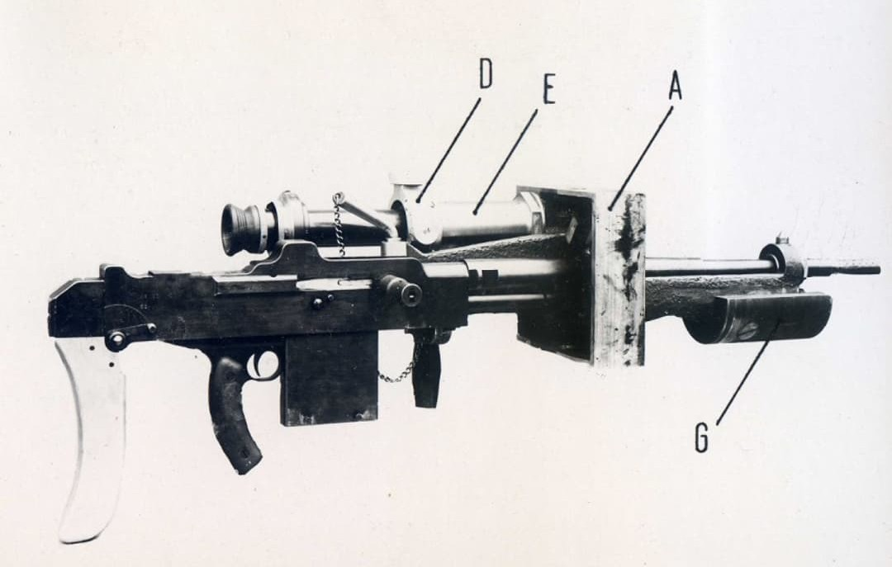
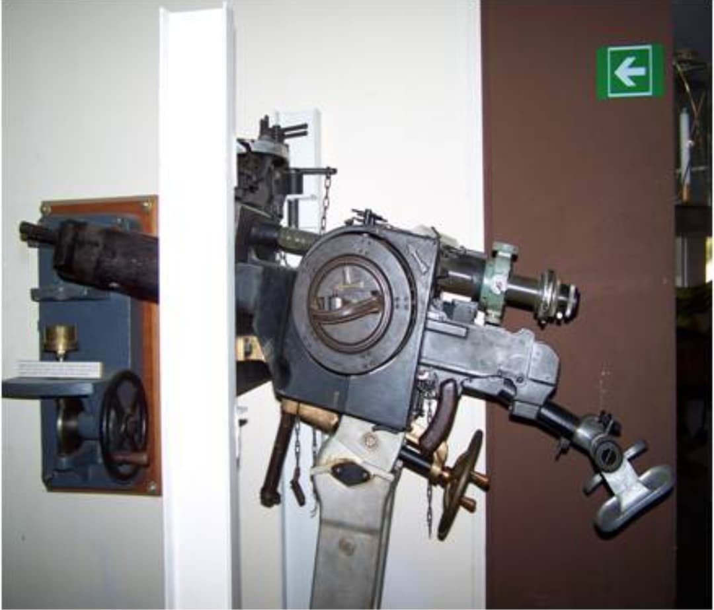

Les armes françaises de la Seconde Guerre mondiale représentent un ensemble varié de modèles issus de plusieurs décennies d’évolution. Entre modernisation rapide, héritage de la Grande Guerre et innovations techniques, l’armement français de 1915 à 1945 reflète une période complexe où coexistent équipements anciens et armes de conception récente.
Cette section du Musée HOP WW2 présente l’ensemble des armes blanches, fusils, pistolets, fusils-mitrailleurs, mitrailleuses et armes d’appui utilisées par les forces françaises durant le conflit. Chaque fiche offre une description détaillée, des photographies, et les éléments permettant d’identifier un modèle authentique.
La MAC 1931 est la mitrailleuse standard des fortifications françaises, notamment dans la Ligne Maginot. Conçue pour offrir une cadence de tir élevée et une fiabilité maximale, elle est utilisée dans les blocs de combat, les cloches, les casemates et les ouvrages d’artillerie.
Chambrée en 7,5×54 mm, elle fonctionne avec des bandes rigides de 150 coups, assurant un tir soutenu et précis. Sa conception robuste en fait l’une des armes automatiques les plus fiables de l’armée française en 1939–1940.


La MAC 1931 est conçue pour équiper les fortifications françaises, en particulier la Ligne Maginot. Elle est installée dans les créneaux de tir, les cloches GFM, les casemates et les ouvrages d’artillerie.
Durant la campagne de France en 1940, elle se distingue par sa fiabilité et sa capacité à fournir un tir soutenu contre les assauts allemands. Elle reste en service dans certaines unités jusqu’à la fin de la guerre.